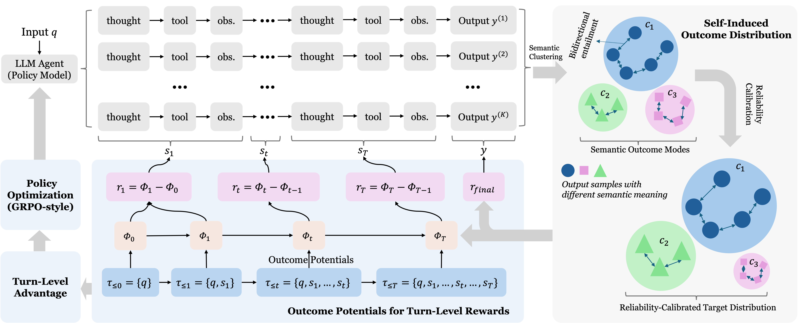
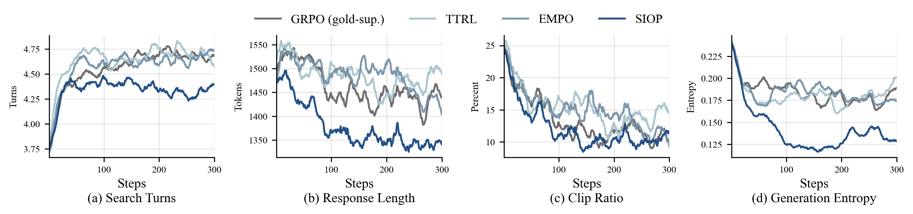

Long-horizon LLM agents do not usually fail in one single moment. They drift. A bad search query, a weak observation, or a misleading intermediate thought can quietly move the whole trajectory toward the wrong final answer. The hard part is that the training signal often arrives only at the end.
If a verifier tells us whether the final answer is correct, outcome RL can reward the whole trajectory. But that reward is blunt. It says that the trajectory was good or bad, without telling us which turn helped and which turn hurt. Process supervision can solve this, but it usually needs annotated intermediate steps or a reliable task-specific verifier. Many agentic settings do not have either.
When we sample several rollouts for the same query, the final answers often fall into a few semantic groups. Some rollouts say the same thing in different words. Some groups are supported by retrieved evidence. Some groups look like low-consensus noise. This structure is already present in the model's own behavior.
SIOP treats these semantic answer groups as latent future outcome states. Instead of asking whether a turn moves the model toward a known gold answer, it asks whether the turn increases support for a reliable future outcome mode induced by the agent's own sampled rollouts.
For each query, the current policy generates several search-augmented trajectories and final answers.
Answers with the same meaning are grouped into semantic outcome modes, so the reward is less sensitive to surface wording.
Raw majority is not enough. SIOP reweights outcome modes using reliability signals such as evidence support from tool observations.
Each turn receives credit when it increases prefix-conditioned support for the rollout's reliable semantic outcome mode.
The final answer receives outcome mass at the terminal turn, and earlier turns receive credit through turn-local discounted returns.

We test SIOP on seven search-augmented question-answering benchmarks with Qwen3-4B and Qwen3-8B backbones. The comparison is designed to separate verifier-free learning from gold-supervised learning. SIOP uses no gold labels during training.
| Backbone | Avg. EM | Avg. F1 | Main Takeaway |
|---|---|---|---|
| Qwen3-4B | 0.360 | 0.445 | Best verifier-free average on both metrics. |
| Qwen3-8B | 0.388 | 0.480 | Matches gold-supervised GRPO in average EM and improves average F1. |
The behavior curves tell a similar story. SIOP does not simply make the model search more. It learns a more controlled interaction pattern, with fewer redundant turns, shorter responses, lower clip ratios, and lower generation entropy.

SIOP is a step toward agentic RL that can learn from its own outcome structure. The agent does not need a gold answer for every query, and it does not need a hand-built verifier for every environment. It only needs enough rollouts to reveal plausible future outcome modes, then it can ask a more local question: which turns made the reliable futures more likely?